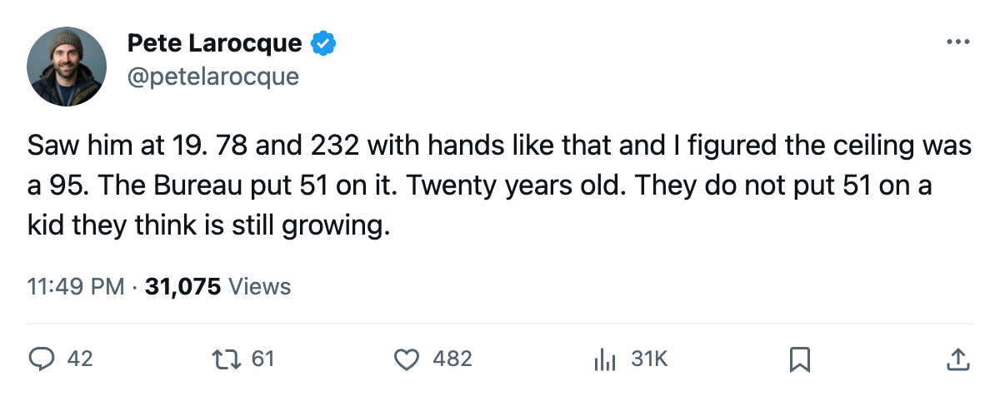
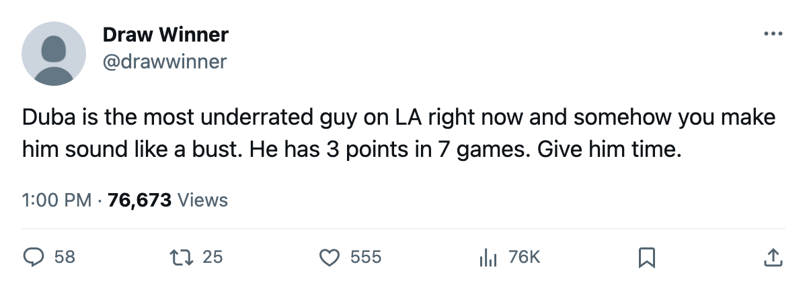

The 3rd Pick Has the Class's Best Overall. His Potential Grade Is 51.
Karel Duba is 20 years old, 78 inches tall, 232 pounds, and the Book says his best game is the one he is playing right now.
 Pete LarocqueScouting editor · The Prospect File
Pete LarocqueScouting editor · The Prospect FileI watched Duba in the pre-draft cycle. The frame is the first thing you see. 78 inches, 232 pounds, shoots right, skates with his head up. The Junior Bureau put him 3rd in the class and the club that took him there thought the body would slow him down at 26, not at 20. They were wrong about the timing.
Karel Duba81 carries an 81 overall on the current Book. Among every first-rounder from 2004 on a league roster today, that is the highest number. Vaclav Spacek80 sits at 80. Tuomo Pihlman78 is at 76. Roger Nylander72 reads 74. Nobody else in that round of 30 grades above Duba.
His potential figure is 51. The Book's potential grade is the Bureau's judgment on whether a player can be better than he is today. A 51 on a 20-year-old means the staff that grades him does not think he will be. It is the floor of the scale, the number they put on men they consider finished before their contracts expire.
The gap nobody else in his class carries
Three players had potential below their overall when this desk flagged them on the 24th: Tuomas Lydman73, Tuomo Pihlman, and Kristian Timander76. Ages 20 and 21. The gaps there were 17, 20, and 11 points between overall and potential. Duba's gap is 30. Eighty-one minus 51. He is 20 years old, 7 games into his 2nd season, and the distance between what the Book thinks he is and what it thinks he will become is wider than anything else in the 2004 class.
| player | overall | potential | gap | age |
|---|---|---|---|---|
| Karel Duba | 81 | 51 | 30 | 20 |
| Tuomo Pihlman | 76 | 56 | 20 | 21 |
| Tuomas Lydman | 73 | 56 | 17 | 21 |
| Kristian Timander | 72 | 61 | 11 | 21 |
The Development Index has him at +7. His base grade is 76. The Index is showing him 7 points above that base right now, and the Index is the form term: it moves with the season. If the form drops, the overall follows. A player with a 76 base and a 51 potential has no room below 76 to be surprised by. The Book already expects him to be worse.
What he is actually doing
Duba's season line reads 7 games, 3 points, 20.3 minutes a night at  Los Angeles Kings. Last season: 54 games, 15 points, 10.1 minutes. His points-per-game rate moved from 0.28 to 0.43 between those two campaigns. Those are not bad numbers for a 20-year-old on a team with
Los Angeles Kings. Last season: 54 games, 15 points, 10.1 minutes. His points-per-game rate moved from 0.28 to 0.43 between those two campaigns. Those are not bad numbers for a 20-year-old on a team with  Roman Cechmanek90,
Roman Cechmanek90,  Adam Deadmarsh87, and
Adam Deadmarsh87, and  Mike Cammalleri87 ahead of him in the lineup.
Mike Cammalleri87 ahead of him in the lineup.
He is not hurting his club. LA is 1-3-2 through 7 games, last in the Pacific. Duba's 3 points tie him with  Alexander Frolov79 for the team lead among forwards with 7 or more games. The production is there. The problem is the ceiling.
Alexander Frolov79 for the team lead among forwards with 7 or more games. The production is there. The problem is the ceiling.
A 51 potential with those physical tools means the Book has a problem with how he plays the game, not his body. Speed 94, agility 94, puck handling 93, shot power 93, balance 91, acceleration 89. Those are elite individual attributes. The low numbers: toughness 50, fighting 52, speed with the puck 52. The Book sees a man who separates, accelerates, handles, and then stops at the contact.
The contract and the clock
Duba's deal pays him $1.03M with 2 years left. He is not going anywhere at that figure. LA cannot move a 20-year-old first-rounder with an 81 overall for nothing, and the potential number means no other club is lining up to overpay for the asset either. The contract is the kind that ages badly: it does not look expensive today, and it will not look cheap when the form drops back to base and the overall settles at 76 with the final year running.
Atlanta had this conversation with  Ilya Kovalchuk91 in May at 138 points. LA has it with a 20-year-old who scored 15 points last year and 3 in 7 games this year, and whose potential grade is below the number they drafted him for.
Ilya Kovalchuk91 in May at 138 points. LA has it with a 20-year-old who scored 15 points last year and 3 in 7 games this year, and whose potential grade is below the number they drafted him for.
The 3rd pick in 2004 will wear a Los Angeles sweater for at least 2 more seasons. The Book says the best version of him is on the ice right now. I saw him when he was 19 and the frame made me believe that number would move. It has not.

